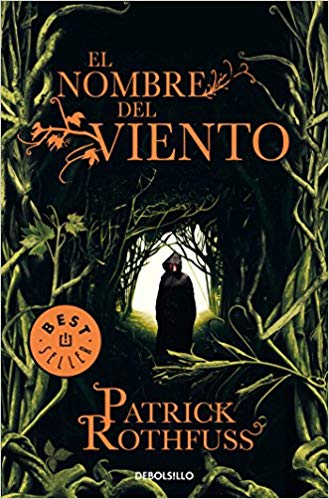

Sobre mi
Me encanta leer es un blog de libros con reseñas y opiniones personales y desinteresadas sobre mis lecturas. Aquí encontrarás criticas recomendaciones literarias de libros de todo tipo de género y época : Ciencia ficción, historia, relaciones humanas, aventuras, novela negra. Sobre todo las reseñas se centrarán en novela pero puede que también haya ensayo, novela gráfica y teatro. Espero que disfrutes de la lectura y podamos compartir juntos la pasión por las letras.
ÍndiceMis libros en octubre
«He robado princesas a reyes agónicos. Incendié la ciudad de Trebon. He pasado la noche con Felurian y he despertado vivo y cuerdo. Me expulsaron de la Universidad a una edad a la que a la mayoría todavía no los dejan entrar. He recorrido de noche caminos de los que otros no se atreven a hablar ni siquiera de día. He hablado con dioses, he amado a mujeres y he escrito canciones que hacen llorar a los bardos.»
«Me llamo Kvothe. Quizá hayas oído hablar de mí.»
Sinopsis
En una posada en tierra de nadie, un hombre se dispone a relatar, por primera vez, la auténtica historia de su vida. Una historia que únicamente él conoce y que ha quedado diluida tras los rumores, las conjeturas y los cuentos de taberna que le han convertido en un personaje legendario a quien todos daban ya por muerto: Kvothe... músico, mendigo, ladrón, estudiante, mago, héroe y asesino.
Ahora va a revelar la verdad sobre sí mismo. Y para ello debe empezar por el principio: su infancia en una troupe de artistas itinerantes, los años malviviendo como un ladronzuelo en las calles de una gran ciudad y su llegada a una universidad donde esperaba encontrar todas las respuestas que había estado buscando
ÍndicePersonajes principales
| Personaje | Descripción |
|---|---|
| Kvothe | Que decir de nuestro protagonista… Es el pilar sobre el que está construido esta trilogía.Kvothe , hijo de Arliden, es su nombre completo. De cabellos rojizos, no va a ninguna parte sin su inseparable laúd. Sus ojos verdes destacan desde su infancia con los Edena Ruth, su cuerpo fuerte y ágil, se asemeja más a un guerrero que al de un músico. Bajo el nombre de Kote regenta una posada, pero antes ha tenido otros muchos… Reshi, Maedre, Dulator, Shadicar, Dedo de Luz, Seis Cuerdas, Kvothe el Sin Sangre, Kvothe el Arcano, Kvothe el Asesino de Reyes. |
| Bast | El inseparable amigo de Kvothe en el presente, en realidad es un fata, un ser que oculta su verdadera apariencia. Su nombre completo es Bastas, hijo de Remmen, príncipe del Crepúsculo y del Telwyth Mael. Tiene más de 150 años aunque es en apariencia joven de cabellos oscuros, y unos ojos de un profundo color azul. Mantiene una relación con Reshi (como Bast se refiere a Kvothe) desde hace dos años, aunque por el momento se desconoce su origen. |
| Cronista | Su verdadero nombre es Devan Lochees. Estudió en La Universidad, es miembro de lo arcano y una de las pocas personas que conoce el nombre del hierro. Ha desarrollado la capacidad de escribir a la misma velocidad a la que puede hablar una persona. Viaja por los Cuatro Rincones de la Civilización, con el fin de escribir grandes historias. Es el encargado de dejar constancia de la vida de nuestro protagonista. |
| Denna | Es el personaje femenino principal de la historia. El gran amor de Kvothe. Nunca se queda mucho tiempo en el mismo lugar, y reaparece siempre con un nombre distinto: Dianne, Alora, Dyanae, Dinael, Dinay , Dianah, Donna… son algunos de sus nombres. De cabello castaño, es hermosa, elegante e inteligente y comparte con Kvothe un gran talento para la música y el canto. |
La crítica dice...
- «Una estupenda y fuera de lo común novela de aventuras fantásticas.»
- Justo Navarro,El País
- «Sin duda El nombre del viento se convertirá en un clásico.»
- The Times
- «Un libro para quien conoce el mágico poder de las palabras.»
- Ricard Ruiz Garzón, El Periódico de Catalunya
- «Una aventura insólita y preciosa. Puntuación: Sobresaliente.»
- Manu González, Qué Leer
- «No sucede a menudo, pero El nombre del viento de Patrick Rothfuss sí es tan bueno como dicen las reseñas.»
- Locus